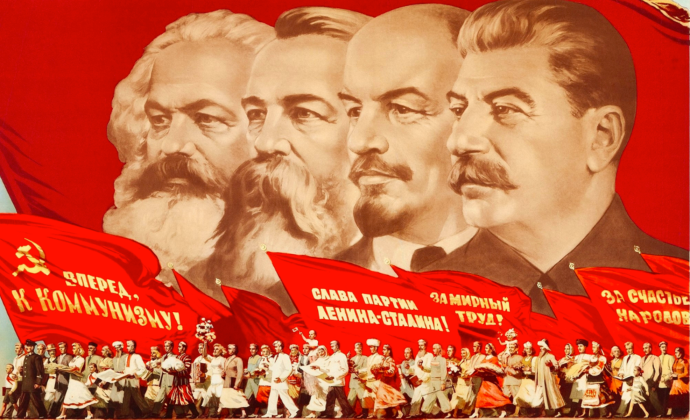
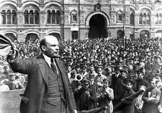

La Revolución Bolchevique
La Revolución Bolchevique, también conocida como la Revolución de Octubre, fue un evento fundamental en la historia del siglo XX que marcó el inicio de la instauración del comunismo en Rusia y la creación de la Unión de Repúblicas Socialistas Soviéticas (URSS). Tuvo lugar en octubre de 1917 según el calendario juliano (noviembre según el gregoriano) y fue liderada por el Partido Bolchevique, encabezado por Vladímir Lenin

Contexto
La revolución ocurrió en el marco de la Primera Guerra Mundial (1914-1918) y tras años de descontento con el régimen zarista:
- Desigualdad social: Rusia era un imperio agrario con una gran mayoría de campesinos pobres y una pequeña élite aristocrática.
- Fracaso de la Revolución de 1905: Aunque provocó reformas como la creación de la Duma (parlamento), el zar Nicolás II mantuvo un poder autoritario.
- Primera Guerra Mundial: Rusia sufrió enormes pérdidas humanas y económicas, exacerbando el hambre, la pobreza y el descontento popular.
- Revolución de Febrero de 1917: El zar fue derrocado y se instaló un gobierno provisional liderado por Aleksandr Kérenski, que no logró estabilizar la situación ni retirarse de la guerra.

Desarrollo de la Revolución de Octubre
- Liderazgo de los bolcheviques: Este grupo marxista radical, liderado por Lenin y León Trotski, promovió una revolución socialista que eliminara al gobierno provisional. Su lema principal era "Paz, pan y tierra".
- Asalto al Palacio de Invierno: El 7 de noviembre de 1917, los bolcheviques tomaron el control de los principales centros de poder en Petrogrado (hoy San Petersburgo), derrocando al gobierno provisional.

Consecuencias
- Fin del sistema zarista: Se abolió la monarquía y se estableció un sistema socialista.
- Inicio de la guerra civil rusa (1918-1921): Los "rojos" (bolcheviques) lucharon contra los "blancos" (monárquicos, liberales y extranjeros), consolidando su poder tras la victoria.
- Creación de la URSS en 1922: El régimen bolchevique reorganizó el país como un estado comunista.
- Impacto global: La revolución inspiró movimientos comunistas en todo el mundo y polarizó la política internacional durante décadas.
La Revolución Bolchevique es considerada un hito que transformó el curso del siglo XX al dar origen al primer estado socialista de la historia.